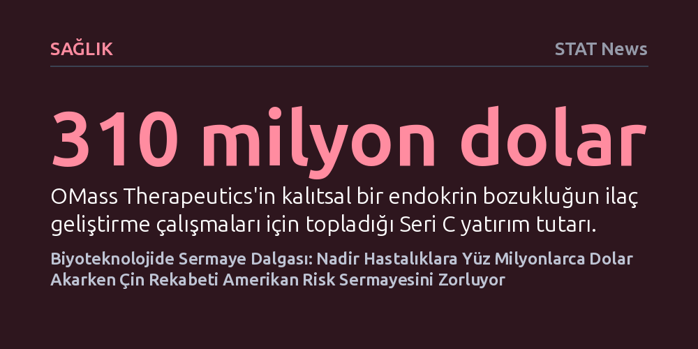

SAGLIK · STAT News · 2026-10-16
OMass'ın nadir hastalıklara yönelik 310 milyon dolarlık yatırımı ve OrbiMed'in 3 milyar dolarlık yeni sağlık fonları biyoteknolojide sermaye akışını hızlandırırken, Çin'in yükselişi Amerikan risk sermayesi şirketlerini doğrudan tehdit ediyor.
Biyoteknolojideki milyarlarca dolarlık yeni sermaye akışı ve Çin'in yükselişi, yeni nesil tedavilerin geliştirilmesinde belirleyici gücün yalnızca laboratuvarlarda değil, küresel risk sermayesi rekabetinde yattığını gösteriyor.

İngiltere merkezli biyoteknoloji şirketi OMass Therapeutics, nadir ve kalıtsal bir endokrin bozukluk olan konjenital adrenal hiperplazi tedavisi için geliştirdiği ilaç adayının klinik süreçlerini finanse etmek amacıyla 310 milyon dolarlık Seri C yatırım turunu tamamladı. Vücudun hayati hormon dengesini bozan bu genetik bozukluk, hastaların yaşam boyu karmaşık tedavilere bağımlı kalmasına yol açıyor. OMass'ın geliştirdiği küçük moleküllü yeni terapötik yaklaşım, hastalığın kökenindeki hormonal mekanizmaları hedef alarak mevcut tedavilerin yetersiz kaldığı alanlarda yeni bir klinik alternatif sunmayı amaçlıyor.
Biyoteknolojide klinik çalışmalar, hem yüksek başarısızlık riski hem de yüz milyonlarca dolarlık bütçe gereksinimi nedeniyle yatırımcılar açısından en zorlu eşiklerden biri olarak kabul edilir. OMass'ın sağladığı bu yüksek tutarlı finansman, özellikle endokrinoloji ve immünoloji alanındaki özgün mekanizmalara sahip biyoteknoloji girişimlerinin sermaye piyasalarında halen güçlü bir karşılık bulduğunu ve nadir hastalıklar pazarının stratejik önemini koruduğunu gösteriyor.
Küresel biyofarma ve sağlık yatırımlarının önde gelen aktörlerinden OrbiMed, bünyesine kattığı iki yeni özel sermaye fonu aracılığıyla yaklaşık 3 milyar dolarlık devasa bir kaynak topladı. Söz konusu sermaye havuzu; Amerika Birleşik Devletleri, Avrupa ve Asya pazarlarında faaliyet gösteren ve yenilikçi sağlık teknolojileri geliştiren şirketlerin büyüme ve klinik deneme aşamalarını desteklemek üzere kullanılacak. Fonların küresel ölçekte ve özellikle Asya pazarını kapsayacak şekilde yapılandırılması, sağlık alanındaki sermaye hareketliliğinin coğrafi çeşitliliğini pekiştiriyor.
Son dönemde makroekonomik belirsizlikler ve halka arz piyasalarındaki durgunluk nedeniyle biyoteknoloji sektöründe yaşanan finansman sıkıntılarına karşın, OrbiMed'in böylesi büyük bir fon büyüklüğüne ulaşabilmesi kurumsal yatırımcıların biyomedikal yeniliklere yönelik uzun vadeli güveninin sürdüğünü kanıtlıyor. Bu sermaye girişi, halka açılma imkanları kısıtlanan klinik aşamadaki birçok biyofarma girişimi için kritik bir finansal güvence işlevi görecek.
Biyoteknoloji arenasındaki asıl yapısal dönüşüm ise Doğu'dan gelen hızlı rekabet dalgasıyla yaşanıyor. Sektör analistleri ve yatırımcılar, Çin merkezli biyoteknoloji ekosisteminin gösterdiği hızlı büyümenin artık yalnızca Amerikalı ilaç geliştiricilerini değil, ABD'deki risk sermayesi şirketlerinin pazar hakimiyetini de doğrudan tehdit ettiği konusunda uyarılarda bulunuyor. Çin'in sunduğu geniş hasta havuzu, düşük klinik araştırma maliyetleri ve hızla gelişen yerli araştırma altyapısı, ilaç keşif ve geliştirme sürelerini belirgin biçimde kısaltıyor.
Bu durum, geleneksel olarak yüksek değerlemelerle yatırım yapan ve uzun geri dönüş sürelerine dayanan Amerikan risk sermayesi modelini ciddi bir baskı altına sokuyor. Çinli girişimlerin Batılı rakipleriyle eş zamanlı, hatta kimi alanlarda daha hızlı klinik veri üretmeye başlaması, küresel yatırımcıların kaynaklarını nereye yönlendireceği konusundaki dinamikleri kökten değiştiriyor ve Batı merkezli sermaye yapılarını stratejilerini yeniden gözden geçirmeye zorluyor.
Sektördeki milyar dolarlık finansman hareketliliği ve jeopolitik rekabetin yanı sıra, biyoteknoloji dünyası kamu sağlığı haberciliğinin saygın isimlerinden Helen Branswell'in vefatıyla sarsıldı. Salgın hastalıklar ve biyotıp alanındaki titiz, bağımsız araştırmalarıyla tanınan Branswell'in kaybı, karmaşık bilimsel süreçlerin topluma doğru aktarılmasında bağımsız bilim gazeteciliğinin ne denli vazgeçilmez olduğunu bir kez daha hatırlattı.
Günümüz biyoteknoloji ekosistemi; nadir hastalıklardan kanser tedavilerine uzanan bilimsel keşiflerin heyecan verici potansiyeli ile finansal belirsizlikler, regülasyon engelleri ve küresel sermaye savaşlarının yarattığı riskler arasında hassas bir dengede ilerliyor. Klinik başarıların ticari ve toplumsal faydaya dönüşmesi, sadece laboratuvardaki buluşlara değil, aynı zamanda şeffaf denetim mekanizmalarına ve küresel yatırım stratejilerinin doğru kurgulanmasına bağlı kalmaya devam ediyor.